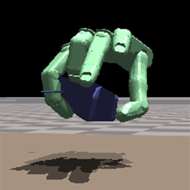
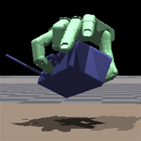
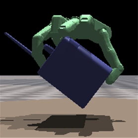

Control the comparison
The same 30 held-out object identities, evaluated at every scale. Size changes; the test identities do not.
Towards Scale-Robust
Universal Dexterous Grasping
Object sizes change. Grasping strategies should, too.



DexGraspNet-S · Unseen categories · Manuscript-reported results, pending final-log verification.
Recognizing a new shape is only part of the challenge. A larger version of the same object may need a fundamentally different grasp.
ScaleDex revisits scale coverage in universal dexterous grasping. Existing assignments evaluate different object identities at different scales, making it difficult to separate the effect of size from the effect of shape.
We reorganize the benchmark, learn scale-conditioned grasp behavior, and distill it into a visual policy. The result is a controlled view of cross-scale robustness—and a policy designed to improve it.
The same 30 held-out object identities, evaluated at every scale. Size changes; the test identities do not.
Scale-specific experts and contact-aware rewards encourage fingertip contact for small objects and palm-supported enclosure for larger ones.
A visual student infers a scale-conditioned latent from point clouds, without ground-truth scale labels at inference.
Object category generalization does not guarantee robustness to object size. ScaleDex studies dexterous grasping across five physical scales using DexGraspNet-S, a reorganized benchmark that evaluates the same object identities at every scale. Its privileged teacher softly combines scale-specific experts, regularizes routing with conditional contrastive learning, and refines the resulting actions with residual control. Scale-aware reaching and contact rewards encourage compact fingertip grasps for small objects and greater palm-supported enclosure for large objects. A visual student learns both teacher actions and a scale-conditioned latent from object point clouds, without ground-truth scale labels at inference. The manuscript reports improved cross-scale grasping, sustained holding, and single-view simulation performance. Reported results remain subject to verification against the final experimental logs.
Scale-conditioned residual learning meets visual policy distillation.
Train four geometry-unaware experts at each of five scales, forming 20 frozen action priors.
SCALE-SPECIFIC EXPERTSUse soft scale-biased routing, conditional contrastive regularization, and residual action corrections.
PRIVILEGED TEACHERAdapt reaching and fingertip–palm contact rewards to object scale for more suitable enclosure.
SCALE-AWARE REWARDSTeach the student both actions and the scale latent. It runs without the teacher or expert library.
VISUAL STUDENTAt inferencePoint clouds + proprioception + previous action → a single visual policy. No ground-truth scale label required.
The same test identities. Five object scales. A closer look at where performance changes.
| Method | 0.6 | 0.8 | 1.0 | 1.2 | 1.5 | Average |
|---|
Source: manuscript, scale-wise success table. Results are provisional pending final-log verification; pp = percentage points.
The main benchmark uses mesh-sampled object point clouds updated with simulated object poses; camera-derived partial observations are evaluated separately. It records whether the object reaches a target region within 200 control steps. Reaching is latched for the episode; it is not a sustained-holding metric. Each seed evaluates 40 episodes per identity–scale pair (6,000 episodes across 30 identities and five scales). Values average equally over identities, then scales. Three independent training seeds are used.
Two complementary tests of the visual student.
Five-scale average. Approximately two seconds in simulation; episodes that never reach the target count as failures.
Five-scale average, without fine-tuning. A fixed simulated camera and oracle object segmentation are used.
Experiments use a fixed-size ShadowHand in simulation. Real sensor uncertainty and transfer across robotic hands remain untested. Large-object sustained holding is still challenging: 38.8% at scale 1.5 over 120 steps.
Change the scale. Keep the identity.
A scale-balanced reorganization of existing DexGraspNet annotations. Every retained identity has verified records at all five scales, with category-disjoint training and test splits.
Existing records are filtered; missing scales and new grasp proposals are not synthesized. Split statistics follow the supplied manuscript. Release manifests are not yet available.
Follow the project. Manuscript and supplementary links will be added when released.
Full manuscript · PDF · Draft
Protocols, implementation details, and additional experiments
huamo555 · Project code release link to be added
Access the released benchmark files
The citation will be added with the public manuscript and author information.